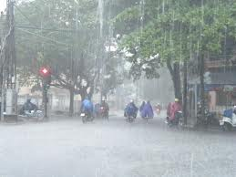
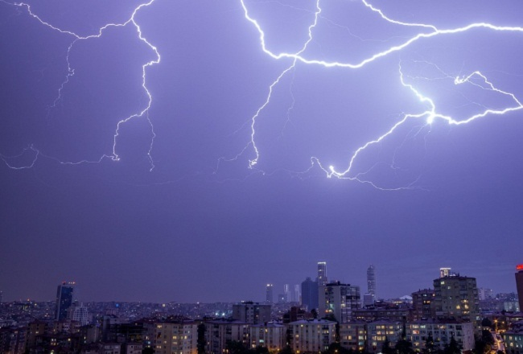
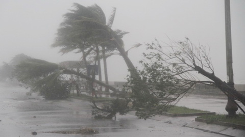
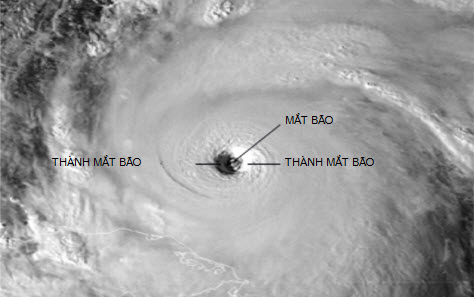
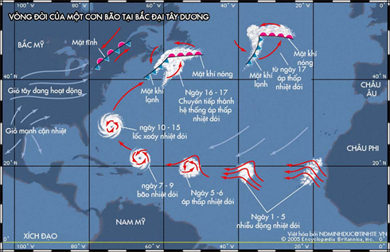

MƯA LỚN
Hiện tượng mưa lớn là hệ quả của một số loại hình thời tiết đặc biệt như bão, áp thấp nhiệt đới hay dải hội tụ nhiệt đới, hội tụ gió mạnh trên nhiều tầng, front lạnh, đường đứt...
Hiện tượng mưa lớn là hệ quả của một số loại hình thời tiết đặc biệt như bão, áp thấp nhiệt đới hay dải hội tụ nhiệt đới, hội tụ gió mạnh trên nhiều tầng, front lạnh, đường đứt... Đặc biệt khi có sự kết hợp giữa chúng với nhau ở cùng một thời điểm sẽ càng nguy hiểm hơn, gây nên mưa to, gió lớn, dông, mưa đá trong một thời gian dài trên một phạm vi rộng.
Mưa lớn hay mưa vừa, mưa to diện rộng là quá trình mưa xảy ra mang tính hệ thống trên một hay nhiều khu vực. Mưa lớn diện rộng có thể xảy ra một hay nhiều ngày, liên tục hay ngắt quảng, một hay nhiều trận mưa và không phân biệt dạng mưa. Căn cứ vào lượng mưa thực tế đo được 24 giờ tại các trạm quan trắc khí tượng bề mặt, trạm đo mưa trong mạng lưới khí tượng thủy văn mà phân định các cấp mưa khác nhau. Theo quy định của Tổ chức Khí tượng thế giới (WMO), mưa lớn được chia làm 3 cấp:
- Mưa vừa: Lượng mưa đo được từ 16 đến 50 mm/24h, hoặc 8 đến 25 mm/12h.
- Mưa to: Lượng mưa đo được từ 51 đến 100 mm/24h, hoặc 26 đến 50mm/12h.
- Mưa rất to: Lượng mưa đo được > 100 mm/24h, hoặc > 50 mm/12h.
Trong các nghiên cứu về ảnh hưởng của mưa thì từ cấp mưa to (51-100 mm/24h) trở lên đã bắt đầu có những ảnh hưởng tiêu cực đến đời sống con người.
DÔNG, TỐ, LỐC
Dông trong khí tượng được hiểu là hiện tượng khí tượng phức hợp gồm chớp và kèm theo sấm do đối lưu rất mạnh trong khí quyển gây ra.
Dông trong khí tượng được hiểu là hiện tượng khí tượng phức hợp gồm chớp và kèm theo sấm do đối lưu rất mạnh trong khí quyển gây ra. Nó cũng thường kèm theo gió mạnh, mưa rào, sấm sét dữ dội, thậm chí cả mưa đá, vòi rồng (ở vùng vĩ độ cao có khi còn có cả tuyết rơi).
Thuật ngữ "dông" tiếng Anh là "thunderstorm", từ điển khí tượng Trung Quốc dịch là "lôi bạo" (âm Hán-Việt) nghĩa là sấm dữ dội), còn trong dân gian ta "dông" là "trận gió to", không hoàn toàn trùng với thuật ngữ "dông" trong khí tượng.
Người La-mã xưa thì cho rằng dông sét là những trận chiến giữa thần sấm (Jupiter, còn thần thoại Hy lạp là thần Zuis) và thần lửa (Vulkan).
Dông được xếp vào thời tiết nguy hiểm vì hàng năm có nước sét đánh chết hàng nghìn người, gây ra hàng trăm vụ cháy rừng, cháy nhà, làm hư hỏng nhiều thiết bị máy móc, nhất là các thiết bị điện tử.
Dông ở nước ta có thể xảy ra quanh năm, nhưng vào tháng chính đông ở khu vực Bắc bộ nước ta dông rất ít, có năm gián đoạn đến dịp sang xuân. Dông thường sinh ra trong thời tiết nóng ẩm nên về mùa hè ở nước ta dông xảy ra thường xuyên hơn, thường vào buổi chiều hay chiều tối và được gọi là dông nhiệt. Đặc biệt trên các vùng núi hay sông hồ trong những tháng nóng ẩm, dông có thể xuất hiện nhiều và bất thường, lại hay kèm theo gió mạnh nên rất nguy hiểm cho tính mạng con người.
HÌNH THÀNH VÀ HOẠT ĐỘNG CỦA BÃO
Hiện tượng mưa lớn là hệ quả của một số loại hình thời tiết đặc biệt như bão, áp thấp nhiệt đới hay dải hội tụ nhiệt đới, hội tụ gió mạnh trên nhiều tầng, front lạnh, đường đứt...Hằng năm, nước ta phải hứng chịu mùa mưa bão kéo dài từ tháng 5 đến tháng 12, với những cơn bão hình thành từ Biển Đông di chuyển và gây ảnh hưởng trực tiếp đến đất liền, nhất là các tỉnh ven biển.
Bão là từ khá quen thuộc với mỗi chúng ta, nhưng chắc hẳn không phải ai cũng biết về nó. Vậy bão là gì? Bão được hình thành và hoạt động như thế nào?
Khái niệm về bão
Bão và ATNĐ được gọi chung là xoáy thuận nhiệt đới (XTNĐ): là một vùng gió xoáy, có đường kính tới hàng trăm kilômét, hình thành trên vùng biển nhiệt đới. Ở bắc bán cầu, gió thổi xoáy vào trung tâm theo hướng ngược chiều kim đồng hồ. Áp suất khí quyển trong bão thấp hơn rất nhiều so với xung quanh và thường thấp hơn 1000mb.
Cấu trúc của bão
Trong không gian ba chiều, bão là một cột xoáy khổng lồ, ở tầng thấp (khoảng 0−3 km) không khí nóng ẩm chuyển động xoắn trôn ốc ngược chiều kim đồng hồ (ở Bắc Bán Cầu) hội tụ vào tâm, chuyển động thẳng đứng lên trên trong thành mắt bão và tỏa ra ngoài ở trên đỉnh theo chiều ngược lại. Ở chính giữa trung tâm của cơn bão không khí chuyển động giáng xuống, tạo nên vùng quang mây ở mắt bão.
Các thành phần chính của bão bao gồm các dải mưa ở rìa ngoài, mắt bão nằm ở chính giữa và thành mắt bão nằm ngay sát mắt bão.
Giá trị khí áp nhỏ nhất tại tâm bão và tăng dần ra phía rìa bão. Càng vào gần tâm, cường độ gió bão càng mạnh, khu vực tốc độ gió mạnh nhất cách tâm bão khoảng vài chục km. Vào vùng mắt bão gió đột ngột yếu hẳn, tốc độ gió gần bằng không. Khi qua khỏi vùng mắt bão gió lại đột ngột mạnh lên nhưng có hướng ngược lại, đây chính là tính chất ảnh hưởng nguy hiểm nhất của bão.
Điều kiện hình thành bão
Bão chỉ có thể hình thành khi có đủ 3 điều kiện: Nhiệt, ẩm và động lực để tạo xoáy.
Nhà khí tượng Erik Palmen đã tìm ra rằng bão chỉ có thể hình thành trên biển trong dải vĩ độ 5 - 20 độ vĩ hai bên xích đạo có nhiệt độ cao (từ 26 – 27 độ C trở lên) đảm bảo cung cấp đủ lượng hơi nước khổng lồ bốc hơi mạnh từ mặt biển để cung cấp năng lượng ngưng kết cho bão hình thành và lực coriolis đủ lớn để tạo xoáy, tạo điều kiện thuận lợi cho bão hình thành. Sở dĩ bão không thể hình thành trong giải 0 – 5 độ vĩ về hai phía của xích đạo vì ở đó lực coriolis quá nhỏ, không đủ để tạo xoáy. Khối không khí trong vùng xoáy có chiều ngang khoảng 200 km, chiều dài khoảng 1000 km, cách mặt đất khoảng 10 - 12 km. Lực Coriolis không những ảnh hưởng đến chiều quay của cơn bão mà nó quy định hướng di chuyển của cơn bão. Theo đó, cơn bão hình thành ở Bắc Bán Cầu luôn di chuyển lệch về bên phải, còn bão hình thành ở Nam Bán Cầu luôn di chuyển lệch về bên trái. Chính vì thế, khi bão hình thành ở biển Đông luôn có xu hướng di chuyển về phía đất liền Việt Nam.
Vòng đời của một cơn bão
Một cơn bão cần từ nhiều giờ cho đến nhiều ngày trước khi hình thành nên cơn bão hoàn chỉnh. Môt chu kỳ của vòng xoáy tiếp diễn khi tốc độ của gió được đẩy lên và sự nhiễu loạn trải qua 3 giai đoạn chính:
- Áp thấp nhiệt đới : tốc độ gió dưới 38mph
- Bão nhiệt đới : tốc độ gió từ 39 – 73mph
- Bão : tốc độ trên 74mph
Các cơn bão cũng có nhiều kích thước khác nhau. Một vài cơn bão nhỏ chỉ gồm một ít gió và mưa đi kèm trong khi có những cơn bão trải dài hàng ngàn dặm với mưa và gió lớn. Trên đường di chuyển, khi đến nơi có nhiệt độ thấp dưới 26oC, đến vùng biển lạnh hoặc vào sâu trong đất liền, bão sẽ mất nguồn năng lượng bổ sung từ không khí nóng ẩm trên biển, bão sẽ yếu dần và tan đi. Đồng thời khi đến đất liền, với sự cản trở của địa hình, cây xanh cộng với lực ma sát với mặt đất cũng làm bão tan nhanh. Bão nhiệt đới "tropical storms" là những cơn lốc xoáy, hình thành ngoài biển khơi, khi nhiệt độ của nước biển nóng quanh 26°C, khối lượng khí ấm bốc lên tạo thành những đám mây khổng lồ ẩm và ấm, chúng hấp dẫn, hút không khí từ tứ phương đến, lấy năng lượng từ khí này tạo nên những luồng gió có vận tốc lên đến 300km/h, 186mph.
Bão biển được định nghĩa và quy định qua các cơ quan khí tượng quốc tế, phân biệt và gọi tên như: Cyclone, Hurricane, Typhoon, tùy thuộc vào nơi hình thành và cấu tạo của nó. Những loại bão biển này kéo dài nhiều ngày đến 2 hay 3 tuần, chúng di chuyển tuyến đường dài, có đường kính từ 15km đến 500km. Ngay chính giữa vòng xoáy của bão biển gần như không có mây, không có gió. Khi cơn bão chạm với đất liền, do sức cọ chạm với đất và cây cối, chúng dần dần mất đi năng lượng và từ từ biến mất.
Quy luật chung của bão và áp thấp nhiệt đới ảnh hưởng tới Việt Nam
Theo số liệu thống kê nhiều năm thì trung bình hàng năm có khoảng 5 - 6 cơn bão và 2 - 3 ATNĐ ảnh hưởng đến Việt Nam. Mùa bão bắt đầu từ tháng 6 và kết thúc vào cuối tháng 11 và nửa đầu tháng 12. Bão thường tập trung nhiều nhất trong các tháng 8, 9, và 10.
Hướng di chuyển trung bình của bão cũng khác nhau theo mùa. Thời kỳ nửa đầu mùa bão, quỹ đạo bão có hướng Tây Bắc, Bắc và Đông Bắc, thường đổ bộ vào Đông Nam Trung quốc, Nhật Bản. Thời kỳ sau quỹ đạo thiên hướng Tây về phía Việt Nam. Trung bình, từ tháng 1 - 5, bão ít có khả năng ảnh hưởng đến Việt nam. Từ tháng 6 - 8, bão có nhiều khả năng ảnh hưởng đến Bắc Bộ. Từ tháng 9 - 11, bão có nhiều khả năng ảnh hưởng đến Trung Bộ và Nam bộ.
Ở nửa đầu mùa bão, quỹ đạo của bão ít phức tạp, và ngược lại, bão thường di chuyển phức tạp trong nửa cuối mùa bão. Quỹ đạo của bão trong Biển Đông có thể được chia thành 5 dạng chính: ổn định, phức tạp, parabol, suy yếu trên biển và mạnh lên gần bờ. Trong số đó, dạng phức tạp và mạnh lên gần bờ là khó dự báo nhất. Hơn nữa, khu vực Biển Đông chịu sự chi phối của nhiều hệ thống thời tiết khác nhau nên càng làm cho việc dự báo phức tạp hơn.
Lưu ý rằng, các đặc điểm trên đây là những tính chất trung bình đặc trưng nhất. Trong mỗi năm cụ thể, sự xuất hiện và tính chất quĩ đạo bão có thể khác nhiều so với các giá trị trung bình này.
Thiệt hại do bão
Hàng năm bão đã trở thành nỗi kinh hoàng gây thiệt hại nặng nề cho những quốc gia ven biển. Mỗi cơn bão có thể trút hàng trăm thậm chí vài trăm milimet nước chỉ trong một ngày. Nguy hiểm hơn khi bão kết hợp với triều cường sẽ gây ra lũ lụt nghiêm trọng. Ngoài ra gió giật trong bão kèm theo những cơn lốc xoáy có thể làm đổ nhiều công trình, nhà cửa, cây cối…
Mức độ thiệt hại do bão không chỉ phụ thuộc vào sức mạnh của các cơn bão mà còn phụ thuộc vào cách nó đổ bộ. Thiệt hại do bão gây ra khác nhau tùy thuộc theo chúng tấn công vào phía nào của một khu vực nhất định. Nếu nó tấn công ở phía bên phải sẽ gây ra ảnh hưởng lớn hơn ở phía bên trái vì bên phải tốc độ gió và tốc độ của bão chuyển động bổ xung cho nhau còn ở phía bên trái, tốc độ gió và tốc độ của bão chuyển động bù trừ lẫn nhau.
Chính vì vậy, sự kết hợp giữa gió, mưa và lũ lụt do một cơn bão gây ra có thể gây ra những thiệt hại không thể lường trước được cho khu vực bị bão đổ bộ.
Quy định về bản tin dự báo, cảnh báo bão ở nước ta
1. Tin bão gần Biển Đông
Tin bão gần Biển Đông được ban hành khi bão hoạt động ở ngoài Biển Đông và có khả năng di chuyển vào Biển Đông trong 48 giờ tới.
2. Tin bão trên Biển Đông
Tin bão trên Biển Đông được ban hành khi bão hoạt động trên Biển Đông và có một trong các điều kiện sau:
a) Vị trí tâm bão cách điểm gần nhất thuộc bờ biển đất liền Việt Nam trên 1.000 km;
b) Vị trí tâm bão cách điểm gần nhất thuộc bờ biển đất liền Việt Nam từ 500 đến 1.000 km và chưa có khả năng di chuyển về phía đất liền Việt Nam trong 48 giờ tới.
3. Tin bão gần bờ
Tin bão gần bờ được ban hành khi có một trong các điều kiện sau:
a) Vị trí tâm bão cách điểm gần nhất thuộc bờ biển đất liền Việt Nam từ 500 đến 1.000 km và có khả năng di chuyển về phía đất liền Việt Nam trong 48 giờ tới;
b) Vị trí tâm bão cách điểm gần nhất thuộc bờ biển đất liền Việt Nam từ 300 đến dưới 500 km và chưa có khả năng di chuyển về phía đất liền Việt Nam trong 48 giờ tới.
4. Tin bão khẩn cấp
Tin bão khẩn cấp được ban hành khi có một trong các điều kiện sau:
a) Vị trí tâm bão cách điểm gần nhất thuộc bờ biển đất liền Việt Nam dưới 300 km;
b) Vị trí tâm bão cách điểm gần nhất thuộc bờ biển đất liền Việt Nam từ 300 đến 500 km và có khả năng di chuyển về phía đất liền Việt Nam trong 48 giờ tới.
5. Tin bão trên đất liền
Tin bão trên đất liền được ban hành khi có một trong các điều kện sau:
a) Tâm bão đã đi vào đất liền Việt Nam và sức gió mạnh nhất vẫn còn từ cấp 8 trở lên;
b) Tâm bão đã đổ bộ vào nước khác, nhưng sức gió mạnh nhất vẫn còn từ cấp 8 trở lên và có khả năng ảnh hưởng trực tiếp đến Việt Nam trong 48 giờ tới.
6. Tin cuối cùng về cơn bão
Tin cuối cùng về cơn bão được ban hành khi có một trong các điều kiện sau:
a) Bão đã tan;
b) Bão đã đổ bộ vào nước khác hoặc ra khỏi lãnh thổ, không còn khả năng ảnh hưởng trực tiếp đến Việt Nam;
c) Bão đã di chuyển ra ngoài Biển Đông và không có khả năng quay trở lại Biển Đông.